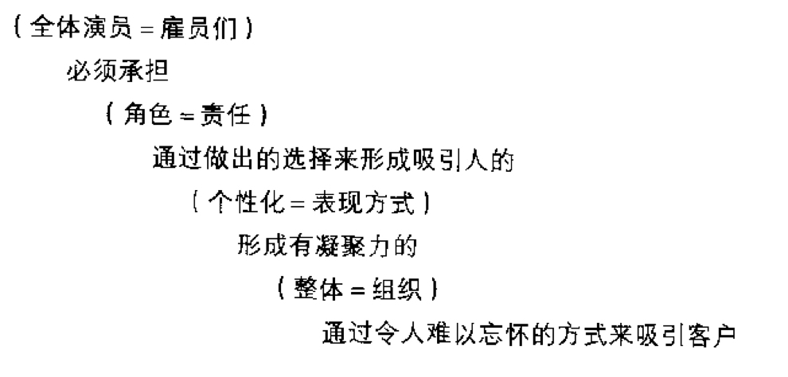

现在轮到你表演¶
一个业务中工作人员的数量越大，就越需要组织的模型————也就是一系列清晰和含糊的关于人们工作的假设（岗位职责规定）。它们一般都是在规模生产的理念下诞生的。因此，这些假设其实都是在试图将工作的各个方面用统一的行为标准来约束。今天，许多商务活动都在挑战这种做法，他们在试图寻找新的方式来吸引、激发和维持高质量的工作动力。
企业在舞台上表演的成功很大程度上取决于幕后的活动，有些甚至完全在表演前完成（舞台设计之类的工作），还有一些则是在表演过程当中完成（舞台经理还有完成戏剧的所有成员）。虽然在通常的情况下，演员指的是在舞台上的表演者，但这一名词同样适用于所有工作人员和他们的责任。角色成为了吸引观众和消费者的更有效的途径。如果没有限定角色（=责任），工作就会变为不受人注意的事，仅仅是为做而做了。
人们扮演角色，但他们要演出特色来。
无论是团体，还是表演公司，或者生产公司，以及街道演员的集合，整体（=组织）都给每个演员创造他自己个性的自由，同时，他们塑造的个性要为整体效果起到有利的推动作用。

在生产开始前必须回答的重要问题：¶
- 认识到怎样加入新的体验因素可以增加需求和/或提高商品和服务的价格；怎样通过吸引的感觉来增强你提供的商品？为了可以更好地把顾客融入具吸引力的主题当中，哪些负面因素可去掉，哪些下面因素应该加入？你如何大规模地量身定制你的商品以提升经济价值的层次？
- 断定哪些商品和服务需要更高的价格，因而为真实的体验提供关键的要素，为了给潜在的顾客提供体验而将原来的商品作为道具，将原来的服务作为舞台；你的公司如何帮助其他的商业主体提升经济价值？你的东西能否活起来以增强顾客对商品的体验？服务能否重新布置成为顾客体验经济的舞台？
- 为了提供体验要将如今的有些做法去掉，因为免费的方式并不是增加更多商品和服务销售的有效途径。重新定义这些因素使得它们成为可以有特定价格的独特体验：对于收费你将如何制定出不同的标准？你怎样令当前的体验集娱乐、教育、逃避、审美于一体？
- 通过设计全新的体验商品把竞争商品定制化：通过以体验为主题，你怎样设计舞台，增加积极的因素，消除负面的因素，让各种印象和谐地联系在一起？如何在值得记忆的事件中，吸引所有的五种感觉？哪种剧场形式能最好地表现你希望创造的体验？
把戏剧变成表演，策略变成商品¶
为实现他们的主要任务————把戏剧变成表演，策略变成商品————导演主要需要来自4个角色的支持，每个角色都对应着有利于为观众（=顾客）展现的舞台体验的四要素之一： - 剧作家帮助创造戏剧（策略） - 编剧帮助发展剧本（=过程） - 技师帮助剧场（=工作）的产生 - 舞台人员协调节目（=商品）的可操纵因素
剧作家¶
剧作家研究和调查分析公司计划出售的产品所面临的竞争的和（或）经济的环境，接着为导演综合归纳各种发现。对剧作家角色起关键作用的是一种能力，他能区分哪些消费现象将影响公司制定出能发挥优势的决策。
- 剧作家必须为大众消费者创造出吸引人的商品
- 必须将难以表达或刻画的地方清晰化
- 必须描述，而不是限定导演和演员所做的剧情说明书和选择
编剧¶
编剧的职责是全面管理商业活动的质量和重构商业节奏和过程。
过程的编写必须围绕着战略开发。
技师¶
1.场景设计者
当工作场所处于公司控制下时，场景设计者将他的注意力集中在包括构成场景的6个方面：后台、舞台、听众席、舞台前部装置、入口和出口。
只有后台是观众看不见的，能够根据它的功能单独设计，其他所有的地方必须综合起来考虑以支持工作
- 场景设计者必须确保没有任何东西是脱离人物的。
- 设计围绕着所有的5种感觉：视觉、触觉、听觉、嗅觉和味觉。
- 不要被习惯所约束：一个产品实际上可以把任何建议看做它的起始点。
2.道具管理者
在吸引消费者时，道具将发挥非常重要的作用。
道具可以简单地为了美感来制造特别的感觉（例如软件的界面），或者为了某些功能性的目的（例如软件中附加的小工具）而引入。
演员要时刻记住不要让道具对表演产生负面影响。
不要期望道具————甚至是设计得很好的道具————来掩饰在全部表演中的失败之处。*演员使用道具能够实现或强调某个特征，没有用的道具避免或少用。
3.服装设计师
- 不同的服装分配由角色来决定
- 服装设计师必须确保每一件服装都传递一种信息，这种信息与导演想要描述的角色的体验和性格的主题相一致。
- 要求导演和设计师允许演员个性化他们的服装
舞台工作人员¶
舞台工作人员一个简单的责任是“确保每个人和每件物品都于正确的时间出现在正确的位置。他们记录着每个舞台上的任何人和任何物品在生产过程中的移动，冷静面对每一个危机，耐心地处理易烦烦躁的脾气，清晰地理解每个人的问题。”
面试中一些重要的观察点¶
- 演员怎样交流？特别关注他是怎样倾听的
- 演员怎样与其他人建立联系又是怎样摆脱的？注意他如何与面试中的从属人员的对话，在什么情况下他表现出向往、意愿和逃避。
- 通过每一次的交流他想要什么？观察那些能激起演员的信号。
- 演员怎样处理不熟悉的形势、中断和打扰？在事情出乎自己控制的时候寻找自我的证明。
- 他的节奏和旋律感能跟上观众吗？对试用者使用这些事件来考察他对各种后果、快节奏的反应和看上去很平静的时间段中的表现。
- 他是否有幽默感？这名演员认为什么是有趣的，他如何通过即兴的方式表现出自己的智力和学习的意愿。
- 这个演员是否做过一些非同寻常的创造？寻找面试过程中和自己对应的独特的选择组合（不仅他们的选择本身）。
- 是不是有很多起积极作用的惊喜？这名演员是如何对待观众的期望的。
体验经济将剧场从舞台领域引入到商务活动。舞台上的演出，包括政府出资的表演房、社区剧场、电影工作室和主题公园都将会继续面对来自意想不到的领域的竞争————不仅是从游戏竞技场和荒野体验，同时还有银行和保险公司，航空公司和宾馆，还来自每一条街道的拐角和重新装备的商业大厦。因为，每一种商务都是一个舞台。